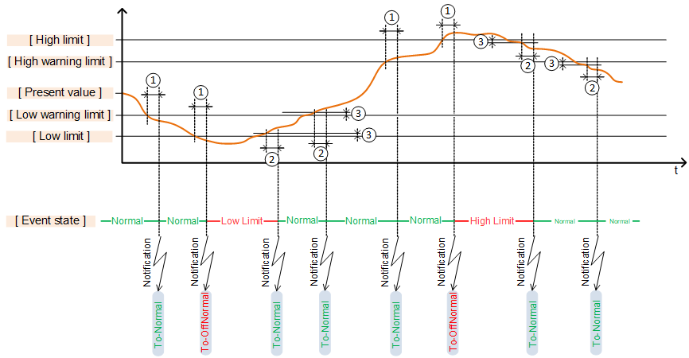
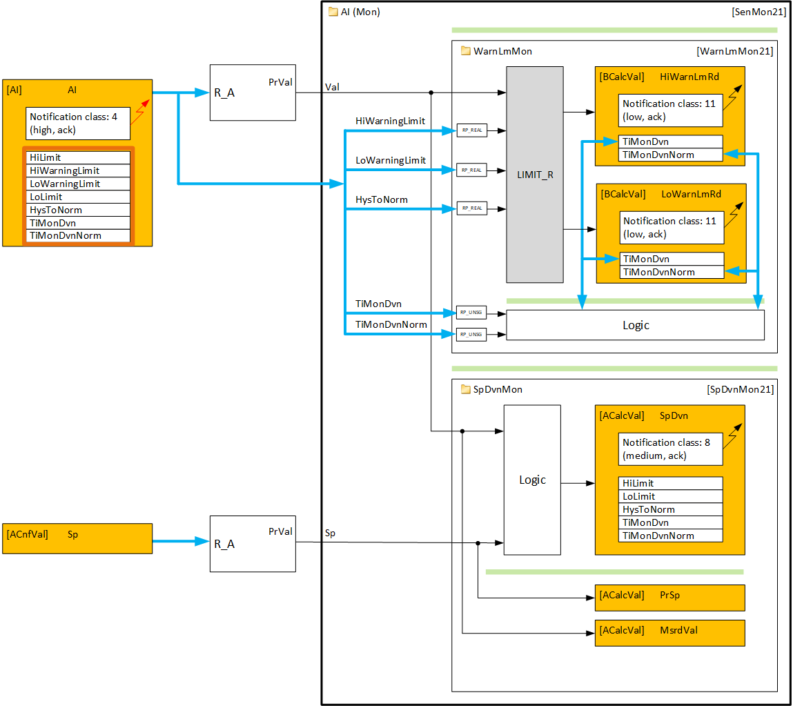
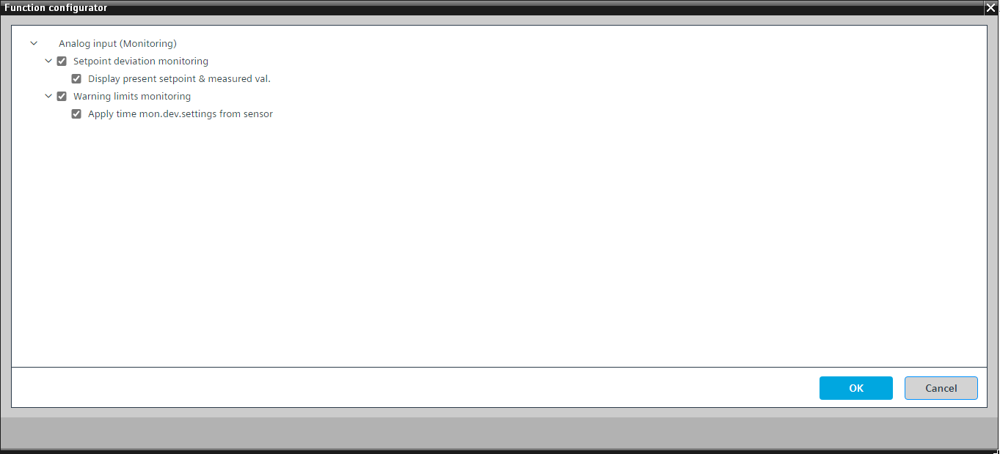
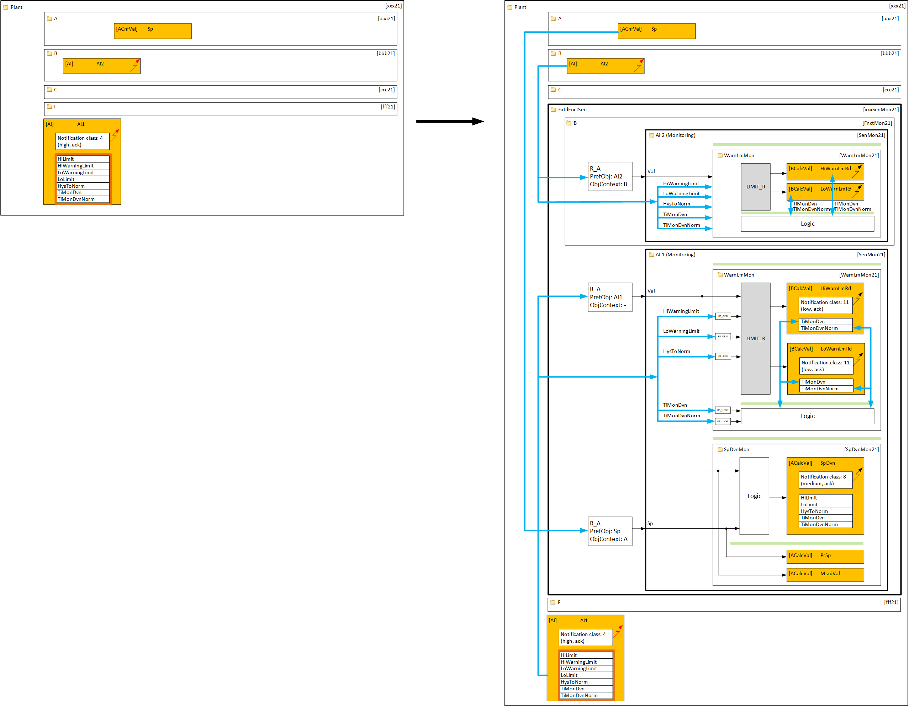
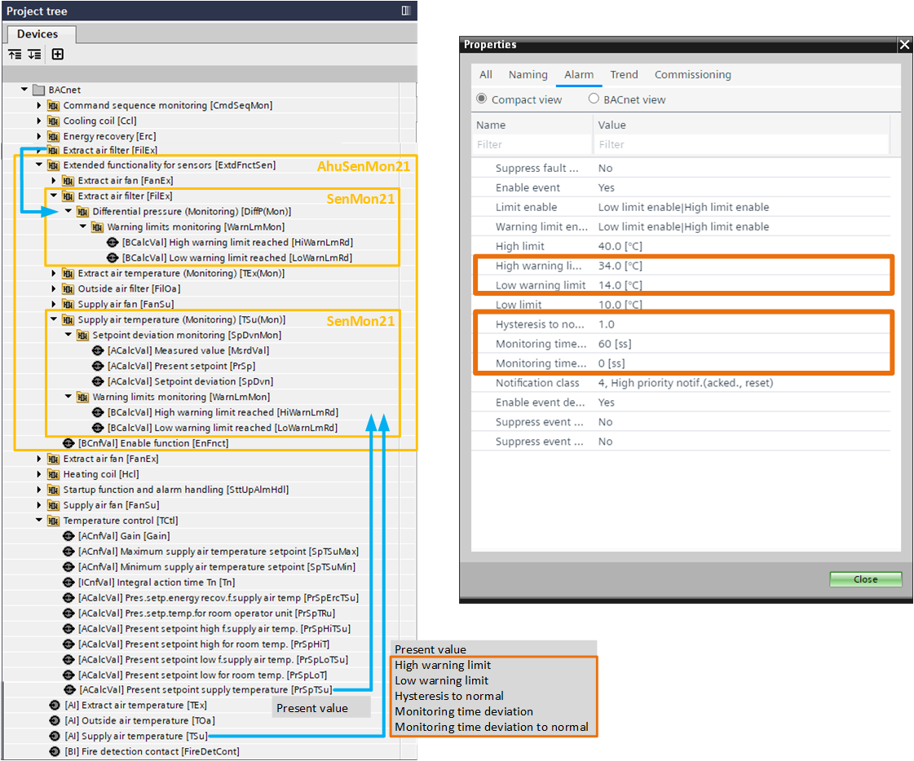
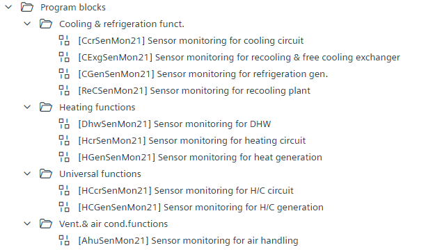

Extended functionality for sensors
Analog BACnet objects supervision
Analog BACnet objects can be monitored in two optional ways:
Method 1: Static limit monitoring
The value of an analog BACnet object is compared to static limits (warning and alarm limits). If these limits are violated, an event is generated. This is known as the "Out of range" algorithm.

1 | Monitoring time deviation | 2 | Monitoring time deviation to normal |
3 | Hysteresis to normal |
Method 1.1: Event generation for alarming limit violation
This is provided by the intrinsic reporting extension of the BACnet object. It can be enabled and pre-set for all analog BACnet objects. When an alarm limit is violated, a "To offnormal" event is generated and sent to BACnet clients, e.g., Desigo CC, which recognize it.

The intrinsic reporting extension supports notification with only one notification class. Only the violation of alarm limits can generate a "To offnormal" event visible to BACnet clients. Violation of warning limits generates a "To normal" event that is not visible to BACnet clients.
Method 1.2: Event generation for warning limits monitoring
Event generation for warning limit violations requires additional logic and BACnet objects with a different notification class to generate a separate "To offnormal" event. This functionality is provided by "Warning limits monitoring" (WarnLmMon21).
Method 2: Tolerance band monitoring
Events are generated when the value of an analog object deviates from the setpoint, especially when the object is part of a control loop. This functionality is provided by "Setpoint deviation monitoring" (SpDvnMon21).
Standard and extended functionality
Method 1.1 is part of the standard functionality for BACnet analog inputs (sensors) and predefined I/Os are preset for it where applicable.
Method 1.2 (WarnLmMon21) and method 2 (SpDvnMon21) are considered an extended functionality for sensors and are grouped in SenMon21.

The figure above illustrates how the value of the AI object is supervised:
- Event generation against static alarm limits is provided by the intrinsic reporting extension of the AI object.
- Extended functionality (event generation against static warning limits and setpoint deviation is provided by SenMon21).
More details for WarnLmMon21
The properties of AI, such as "Present value", "High warning limit", "Low warning limit", "Hysteresis to normal", "Time monitoring deviation", and "Time monitoring deviation to normal", are read (preferably with auto-connect). A function block of type "LIMIT_R" calculates the reached state of the high or low warning limit and provides it to two binary value objects with extensions for intrinsic reporting that can generate "To offnormal" events.
An optional logic called "Apply time monitoring deviation settings from the sensor" reads the values from the "Time monitoring deviation" and "Time monitoring deviation to normal" properties from the AI and writes them to the two binary calculated value objects. Without this option, individual time monitoring deviations can be set for the binary calculated objects.
The optional logic ensures that the values of the two properties for the two binary calculated value objects cannot be changed by a BACnet client. If a BACnet client changes them, the logic detects this and rewrites them.
More details for SpDvnMon21
An event is generated when the value of an analog object deviates from the setpoint. The value of the AI and the control loop setpoint are read, compared, and the difference is provided to an analog calculated value "SpDvn" with an extension for intrinsic reporting. Its "High limit" and "Low limit" parameters define the tolerance band and generate a "To offnormal" event.
Optionally, the measured value and the setpoint can be displayed on BACnet in the context of the setpoint deviation monitor.
Function configuration for SenMon21
The following figure shows the configuration options for SenMon21:

Engineering of several SenMon21 in one plant
The following figure is an example of "Extended functionality for sensors" in a plant that is engineered as an add-on where the existing charts are not changed:

The general idea is to create a new chart called "Extended functionality for sensors" and organize all necessary sensor monitoring functions within it by replicating the structure of the plant where necessary.
The following figure is an example of several SenMon21 in one plant (grouped in AhuSenMon21):

Engineering extended functionality
Program blocks in the library contain structured groups of extended sensor monitoring functions for different plant disciplines.

- Select the appropriate program block and drag it into your plant.
- Connect the output pin [PrOpMod] of the "Plant operating mode" chart with the input pin [PrOpMod] of the "Extended functions for sensors" chart.
- Start the Function configurator for the "Extended functions for sensors" chart and configure it.
- Perform auto-connect and auto-create, if necessary.